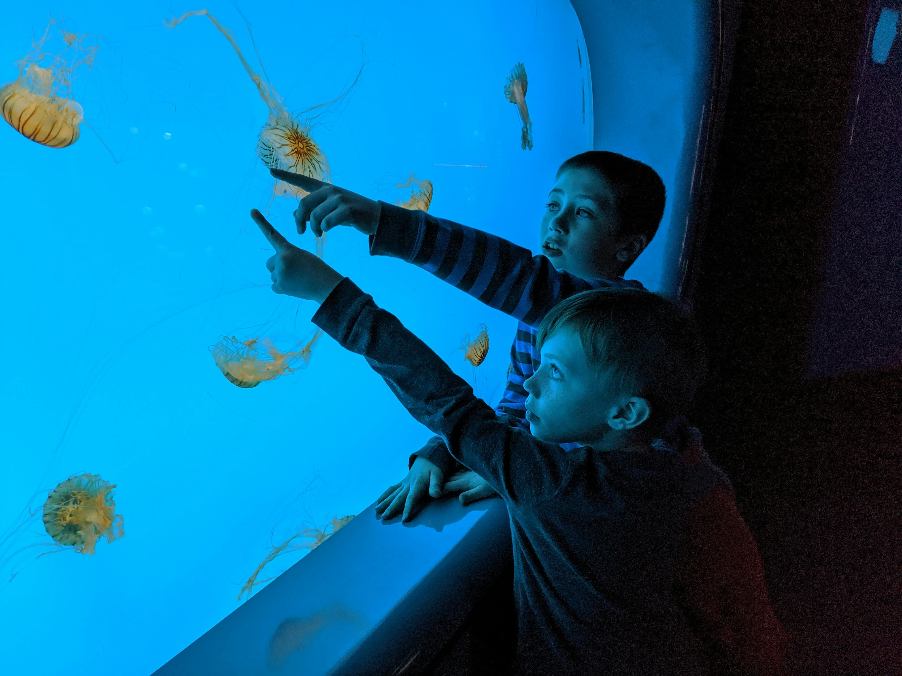

Careers in Marine Science
"The ocean is our planet’s last great frontier—each wave holds a new discovery." – Dr.
Olivia Carter, Marine Biologist
Marine science is a vast and exciting field that explores the ocean and its many ecosystems. Careers in
marine science involve studying marine organisms, oceanic environments, and the impact of human
activities on the ocean. Professionals in this field work in a variety of settings, including research
institutions, government agencies, conservation organizations, and private industries.

Fields of Marine Science
1. Marine Biology
Focuses on studying marine organisms, from microscopic plankton to large marine mammals.
"Every creature in the ocean has a story to tell—it's up to us to listen." – Dr. Emma
Hayes
2. Oceanography
Examines physical, chemical, geological, and biological processes in the ocean.
"To understand the ocean is to understand the heartbeat of our planet." – Dr. James
O’Malley
3. Marine Conservation and Environmental Science
Focuses on protecting marine biodiversity and addressing issues like climate change, pollution, and
habitat destruction.
"Protecting the ocean means protecting our future." – Sylvia Earle
4. Marine Engineering and Technology
Involves designing and building equipment for underwater exploration, such as submersibles and ocean
monitoring systems.
5. Aquaculture and Fisheries Science
Focuses on sustainable seafood production and managing fish populations.
6. Marine Policy and Law
Involves creating and enforcing policies to regulate marine resources and protect the ocean.
Career Opportunities
There are many exciting career paths in marine science, including:
- Marine Biologist – Studies marine organisms and ecosystems.
- Oceanographer – Researches ocean currents, chemistry, and climate interactions.
- Marine Conservationist – Works to protect marine life and habitats.
- Aquatic Veterinarian – Provides healthcare for marine animals.
- Fisheries Scientist – Manages and studies fish populations.
- Marine Archaeologist – Studies underwater cultural heritage and shipwrecks.
- Marine Engineer – Designs equipment for ocean exploration.
- Environmental Consultant – Advises industries on marine sustainability.
- Coastal Resource Manager – Develops strategies for managing coastal ecosystems.
- Marine Policy Specialist – Works on laws and regulations for ocean conservation.
Required Education and Skills
Most marine science careers require a strong educational background in science and research. A bachelor's
degree is typically needed for entry-level jobs, while advanced positions may require a master's or
Ph.D.
Key skills for marine scientists:
- Strong analytical and research skills
- SCUBA diving certification for fieldwork
- Data analysis and statistical proficiency
- Problem-solving and critical thinking
- Communication and teamwork skills
Where to Work
Marine scientists find employment in various sectors, including:
- Universities and research institutions
- Government agencies (NOAA, EPA, etc.)
- Environmental non-profits and NGOs
- Private sector (energy, biotechnology, and aquaculture companies)
- Marine parks, aquariums, and museums